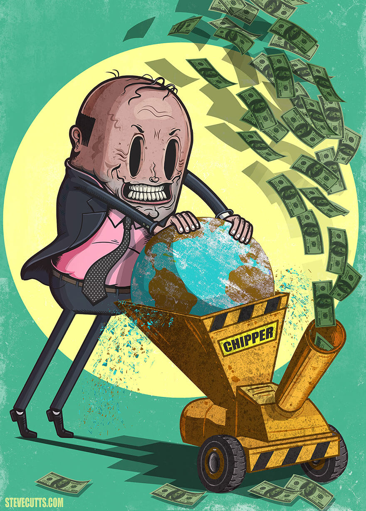
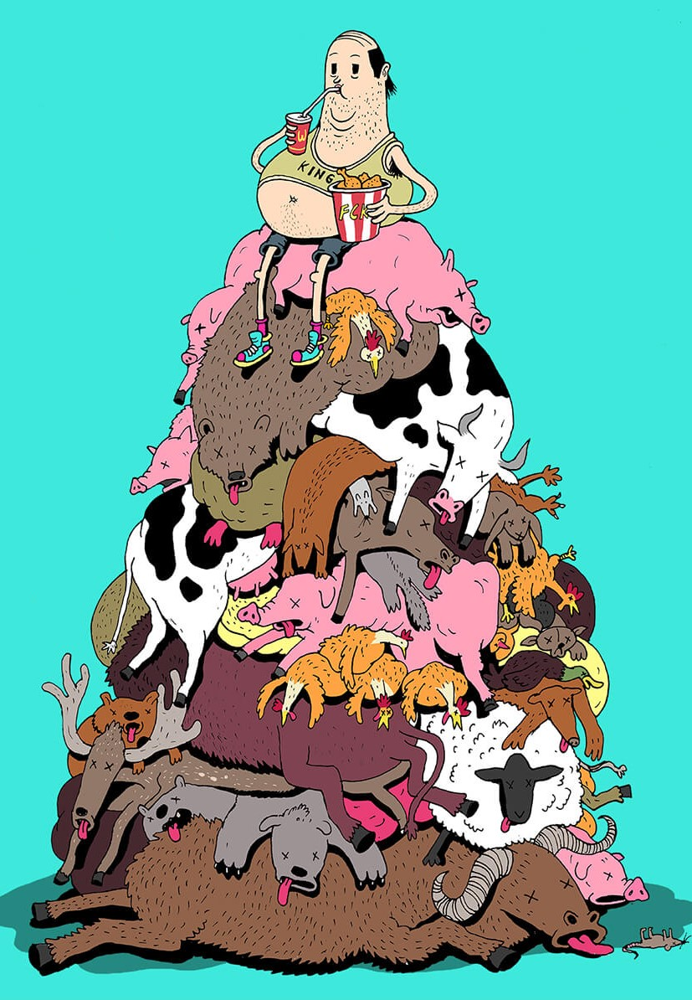
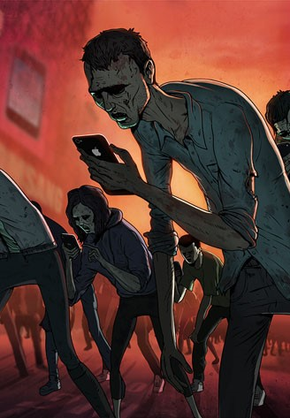
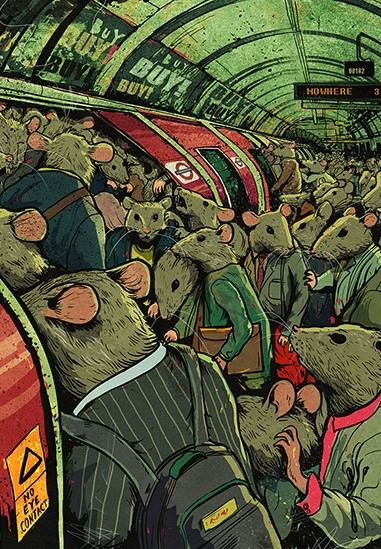

PROYECTO 3
A triste verdade do nosso mundo
A arte não é apenas tirar fotos bonitas de paisagens ou pintar obras surrealistas, mas também pode atuar como um catalisador de mudanças. E Steve Cutts acredita que muitas coisas no mundo devem ser diferentes. Começando com o trabalho: não deve ser uma maneira de esmagar a alma, apenas para obter o todo-poderoso dólar (ou euro). O consumismo não deve atuar como um torno em nossas vidas. Quanto às redes sociais, precisamos nos libertar das correntes que impomos a nós mesmos. A vida não seria melhor então?
Steve Cutts é um ilustrador e cartunista de filmes de animação baseados em Londres. Ele faz vídeos e imagens criticando nossa sociedade moderna e declara que a loucura do homem é uma fonte inesgotável de inspiração.
PROYECTO 1
Otros trabajos
  Image for exhibition Steve Cutts